Recursos Técnicos
Fichas técnicas, guías de instalación y documentación para profesionales. Todo lo necesario para especificar nuestros sistemas.
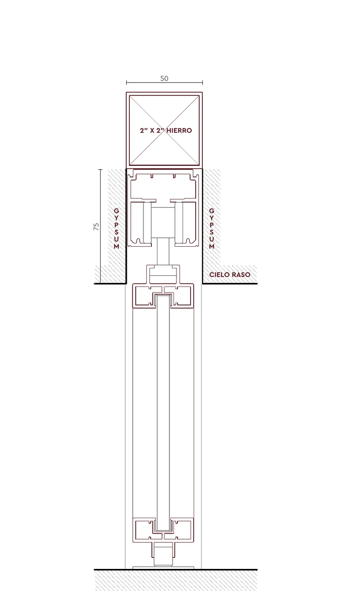
pglass-1a — Sección
1 hoja corrediza colgada de cielo. Elevación con header de carga y encuentro con cielo raso.
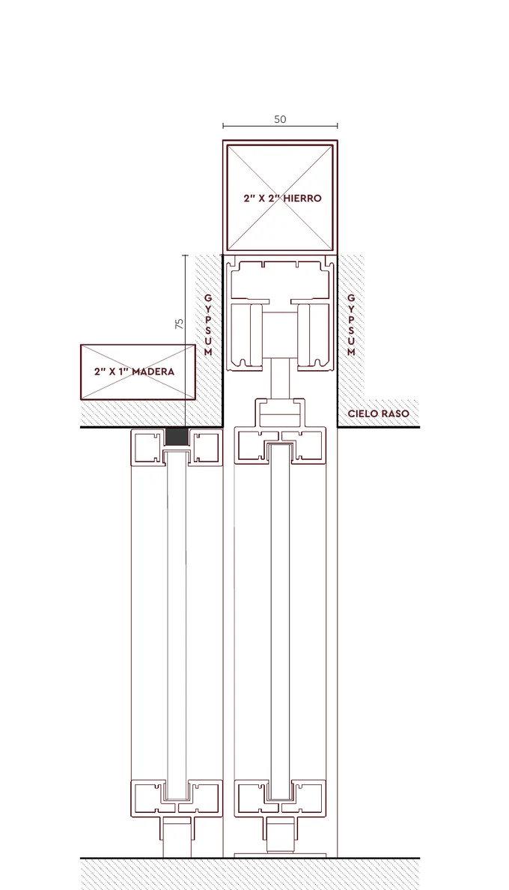
pglass-2a — Sección
2 hojas — 1 fija + 1 corrediza. Elevación con header de carga y encuentro con cielo raso.
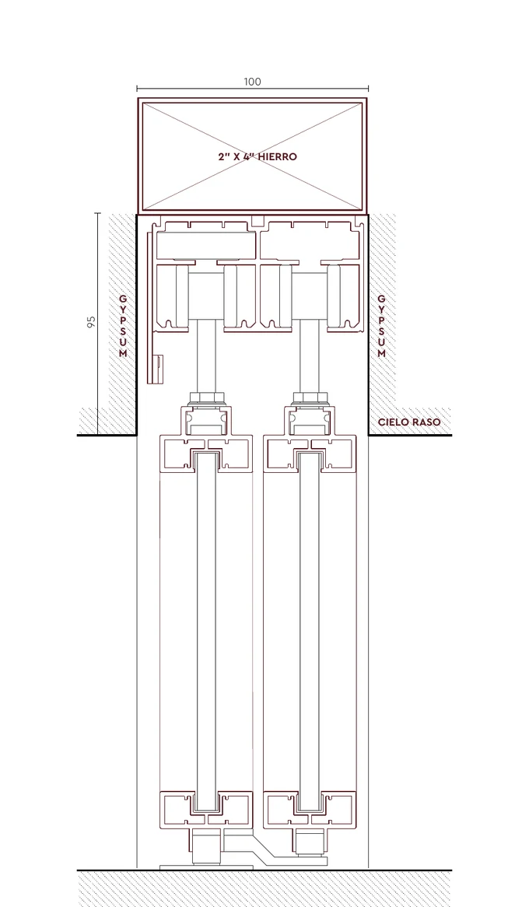
pglass-2b — Sección
2 hojas corredizas — ambas hacia el mismo lado, tipo pocket. Elevación con header de carga y encuentro con cielo raso.
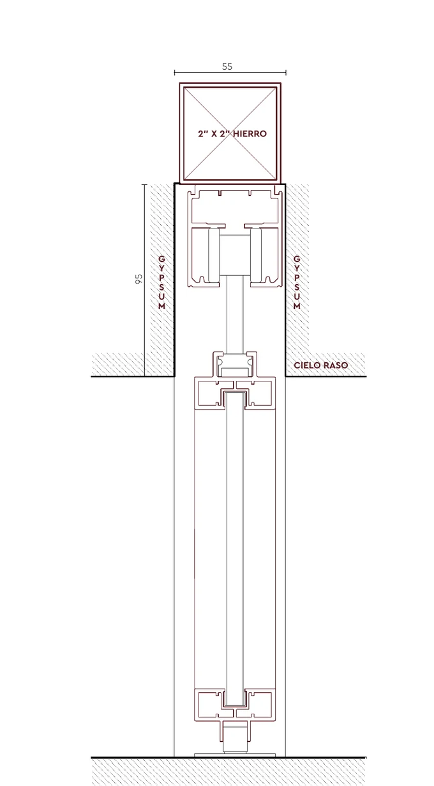
pglass-2c — Sección
2 hojas corredizas — una corre a la izquierda y otra a la derecha. Elevación con header de carga y encuentro con cielo raso.
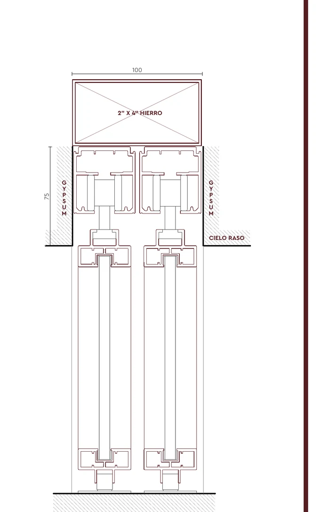
pglass-2d — Sección
2 hojas corredizas — ambos sentidos sobre el mismo riel. Elevación con header de carga y encuentro con cielo raso.
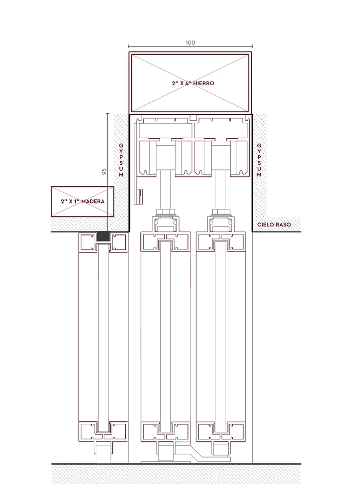
pglass-3a — Sección
3 hojas — 1 fija + 2 corredizas. Elevación con header de carga y encuentro con cielo raso.
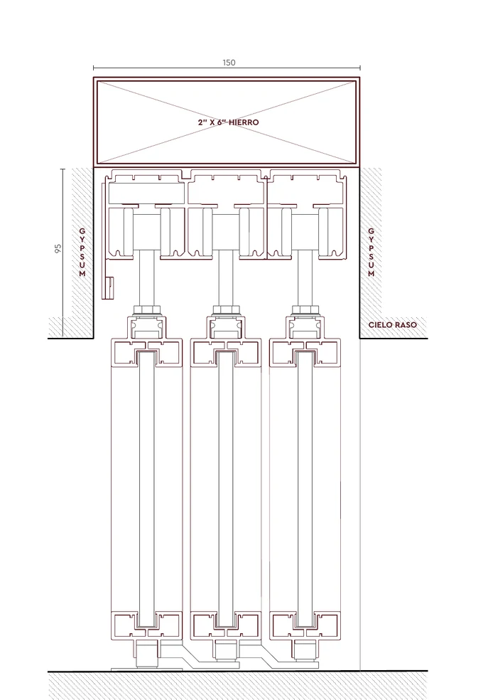
pglass-3b — Sección
3 hojas corredizas. Elevación con header de carga y encuentro con cielo raso.
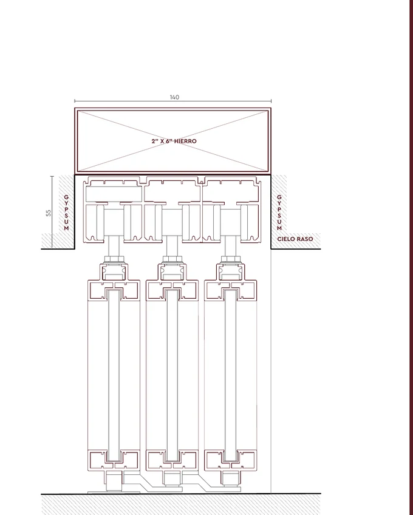
pglass-3c — Sección
3 hojas corredizas. Elevación con header de carga y encuentro con cielo raso.
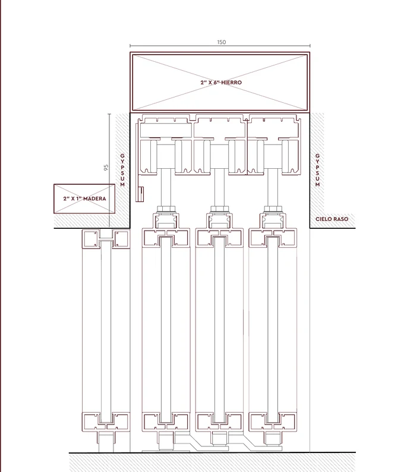
pglass-4a — Sección
4 hojas — 1 fija + 3 corredizas. Elevación con header de carga y encuentro con cielo raso.
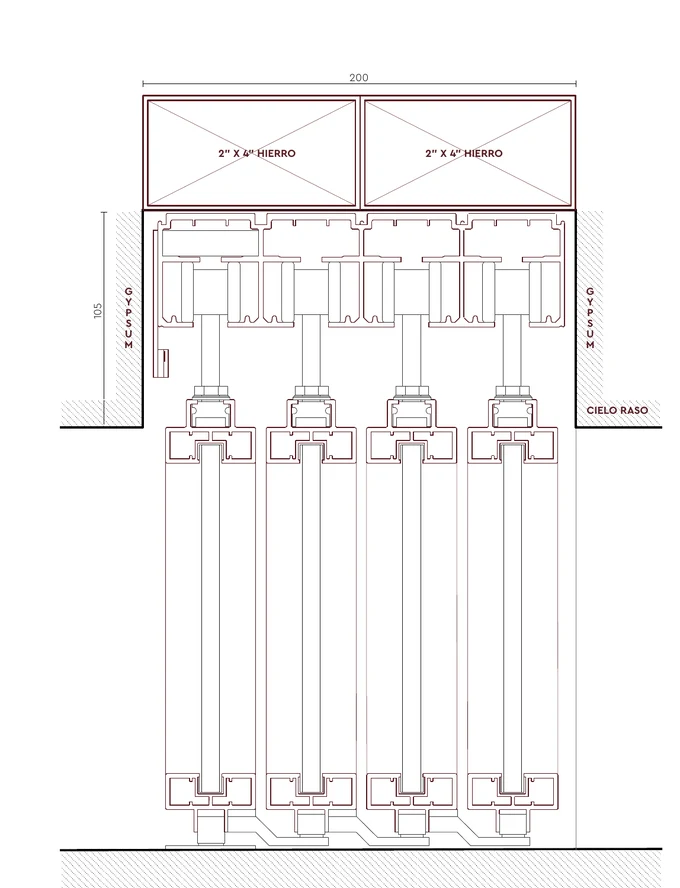
pglass-4b — Sección
4 hojas corredizas. Elevación con header de carga y encuentro con cielo raso.
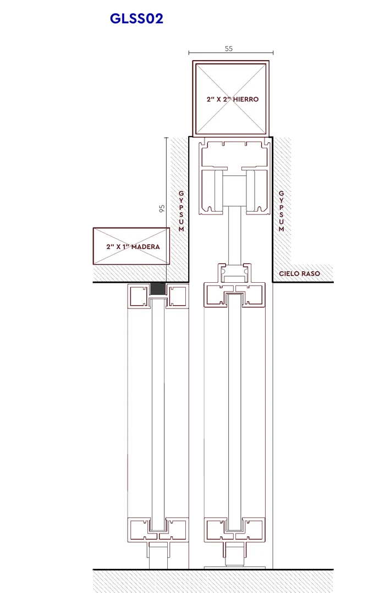
pglass-4c — Sección
4 hojas — 2 fijas + 2 corredizas. Elevación con header de carga y encuentro con cielo raso.